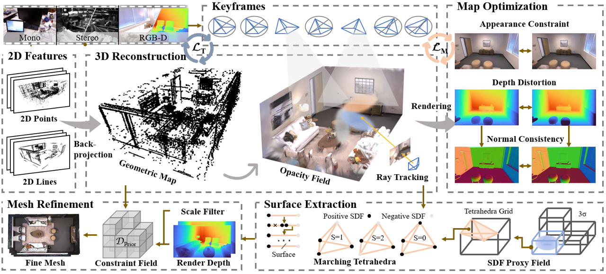
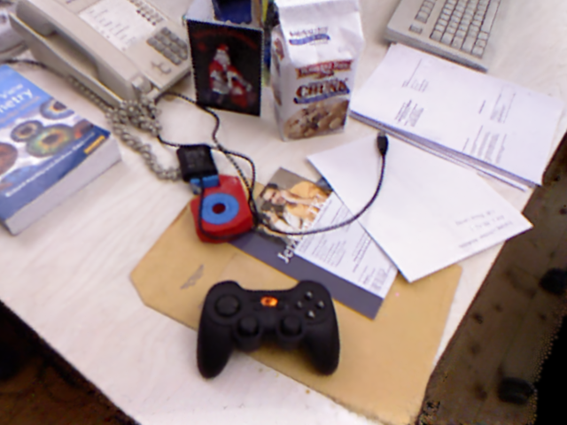
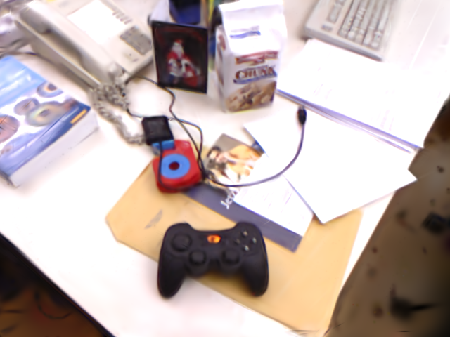
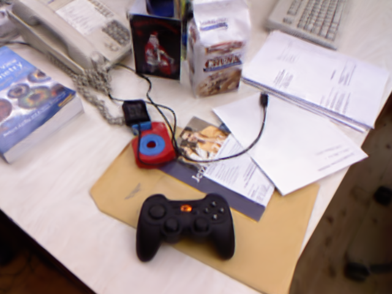
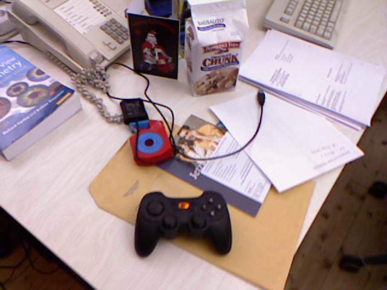
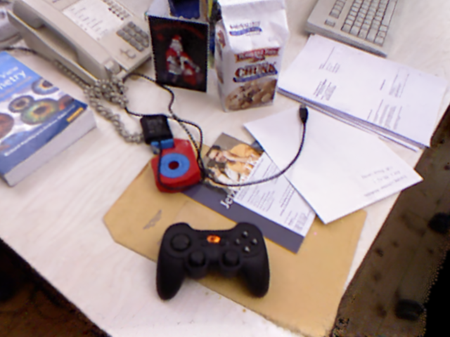
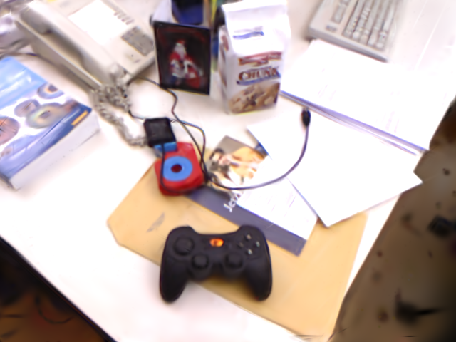
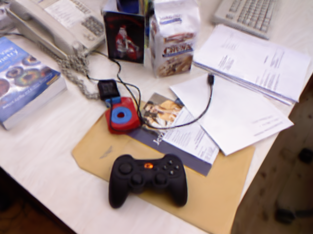
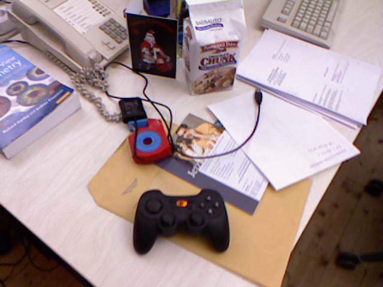

Abstract

We present FGO-Splat, a Gaussian SLAM system capable of processing video streams from arbitrary modalities, which performs fast geometric–optical consistent map reconstruction by maintaining an opacity field. Existing Gaussian SLAM systems struggle to achieve efficient tracking and mapping while supporting multiple input modalities, often requiring a trade-off between rendering quality and geometric accuracy. Our study demonstrates that it is possible to meet all these requirements simultaneously using arbitrary-modality video streams. The key idea of our method lies in explicit feature extraction to capture the underlying scene structure and estimate camera poses, followed by a Gaussian-based ray tracing strategy to construct and optimize a continuous opacity field. When loop closure occurs, our approach performs global adjustment to enhance map consistency. Furthermore, we directly extract the surface using the marching tetrahedra method and refine the resulting mesh with an geometric constraint field. Extensive experiments show that our method achieves superior performance in terms of tracking accuracy, rendering quality, geometric reconstruction, and real-time efficiency.
Method OverView
FGO-Splat supports mono, stereo, and RGB-D streams, mainly including online tracking and mapping modules, as well as offline surface reconstruction modules. 1) The tracking module perceives geometric features to estimate the camera's attitude and construct a preliminary geometric map. 2) The mapping module builds an opaque guided continuous radiation field while optimizing the appearance and geometric information. 3) The surface reconstruction module extracts accurate surfaces with the help of SDF surrogate fields and refines the mesh through geometric information.
 






